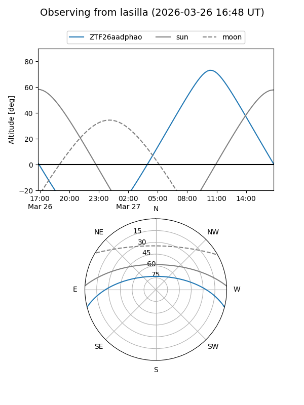
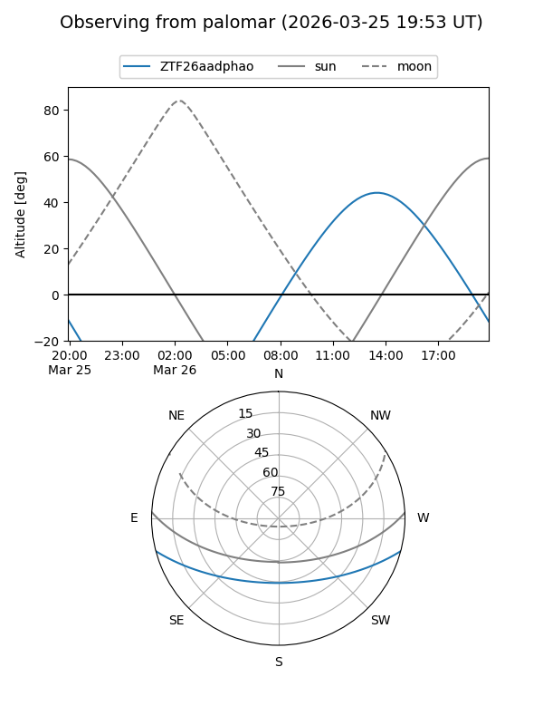

ZTF26aadphao
Target ZTF26aadphao at 2026-03-26 15:26
Aliases and brokers:
FINK: link
Lasair: link
ALeRCE: link
alt names
ZTF26aadphao (ztf,fink_ztf)
Coordinates:
equatorial (ra, dec) = 269.6248,-12.47690
equatorial (HMS+DMS) = 17:58:29.94,-12:28:36.85
galactic (l, b) = (15.7323,+5.76388)
Flags:
Photometry:
last ztfg=17.27
1 ztfg detections
Lightcurve
Visibility


Additional plots